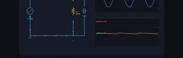
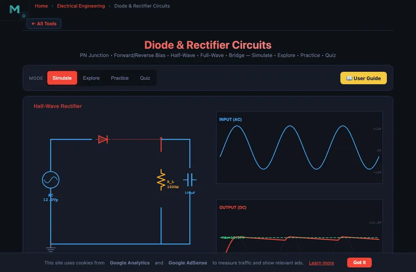

Diode & Rectifier Circuits
PN Junction • Forward/Reverse Bias • Half-Wave • Full-Wave • Bridge — Simulate • Explore • Practice • Quiz
1 Overview
The Diode & Rectifier Circuits Simulator lets you explore how semiconductor diodes convert alternating current (AC) into direct current (DC). You can visualise three rectifier topologies — half-wave, full-wave centre-tap, and bridge rectifier — with animated current flow, real-time input and output waveforms, and adjustable smoothing capacitors. The simulator calculates DC output voltage, ripple voltage, ripple factor, Peak Inverse Voltage (PIV), and rectification efficiency automatically.
This tool is designed for electronics and electrical engineering students, engineering trainees studying power supplies, and physics learners exploring PN junction diode behaviour, forward bias, and reverse bias characteristics.
2 Building the Circuit

The simulator opens in Simulate mode with a half-wave rectifier at Vpeak = 12 V, f = 50 Hz, Rload = 1000 Ω, and Cfilter = 100 μF. To begin:
- Select the Rectifier Type: Half-Wave (single diode), Center-Tap (2 diodes with centre-tapped transformer), or Bridge (4 diodes in a bridge configuration).
- Drag the Vpeak slider (1–24 V) to set the peak AC input voltage.
- Adjust Frequency (50–1000 Hz) to change the AC source frequency.
- Change Rload (100–10,000 Ω) and Cfilter (0–1000 μF) to see their effect on ripple voltage and DC output.
- Toggle the Smoothing Capacitor checkbox on and off to compare filtered vs unfiltered output.
3 Energising the Circuit
Simulate mode is the main interactive workspace. The canvas shows the rectifier circuit schematic with animated current dots and overlaid input/output AC and DC waveforms. Key controls:
- Rectifier Type pills: Half-wave passes only positive half-cycles (Vdc = Vp/π). Centre-tap uses two diodes for full-wave rectification (Vdc = 2Vp/π, PIV = 2Vp). Bridge uses four diodes for full-wave rectification with PIV = Vp.
- Vpeak slider: Sets the amplitude of the input AC waveform. The DC output scales proportionally.
- Frequency slider: Higher frequency means more pulses per second, resulting in lower ripple with the same capacitor.
- Rload slider: Higher load resistance draws less current, improving regulation and reducing ripple.
- Cfilter slider: Larger capacitance stores more charge between peaks, reducing ripple voltage. Set to 0 to see unfiltered pulsating DC.
- Show Current Flow: Toggles animated current dots through diodes and load.
Readout cards display: Vdc (average), Vripple, Vpeak_out, Idc, ripple factor, efficiency, and PIV.
4 Circuit Theory
Explore mode provides structured educational content in two categories:
- Basics: Covers the PN junction diode, forward bias (conduction above ~0.7 V for silicon), reverse bias (blocking), the V-I characteristic curve, and breakdown voltage.
- Circuits: Explains half-wave, centre-tap full-wave, and bridge rectifier topologies. Covers ripple voltage calculation (Vripple ≈ Idc/(fC) for half-wave, Idc/(2fC) for full-wave), PIV ratings, and how smoothing capacitors fill in the valleys between pulses.
Select any concept card to view detailed explanations with formulas and interactive canvas illustrations.
5 Try a Problem
Practice mode generates problems such as: “A half-wave rectifier has Vp = 15 V. Calculate the average DC output voltage”, “Find the ripple voltage for a bridge rectifier with Idc = 50 mA, f = 50 Hz, C = 470 μF”, or “What is the PIV for a centre-tap rectifier with Vp = 20 V?” Enter your answer and get instant step-by-step feedback.
Quiz mode tests your knowledge with 15 multiple-choice questions covering diode behaviour, rectifier types, ripple calculation, PIV ratings, and capacitor filtering. Review your results and detailed explanations at the end.
6 Field Tips
- Start with a half-wave rectifier and no filter capacitor (C = 0) to see the basic pulsating DC waveform, then add capacitance to observe ripple reduction.
- Switch between half-wave and bridge rectifiers at the same settings to compare: the bridge doubles the ripple frequency and roughly halves the ripple voltage.
- Remember the PIV difference: centre-tap PIV is 2Vp while bridge PIV is only Vp, making bridge rectifiers more efficient in diode usage.
- Increase frequency and observe how ripple decreases — this is why switched-mode power supplies operate at high frequencies.
- The ripple factor (Vripple/Vdc) should be as low as possible for a good DC supply. Larger C and higher Rload both help.
- Half-wave efficiency is capped at 40.6%; full-wave reaches 81.2%. The simulator shows this in the efficiency readout.
- Practise calculating PIV before choosing diodes — selecting a diode with insufficient PIV rating causes reverse breakdown and circuit failure.
Understanding Diode Rectifier Circuits — Free Interactive Simulator

Rectification is the process of converting alternating current (AC) into direct current (DC) using one or more semiconductor diodes. Diode rectifiers are fundamental building blocks in every power supply, from simple battery chargers to the regulated supplies inside computers and industrial equipment. This interactive simulator lets you visualise half-wave, full-wave centre-tap, and bridge rectifier circuits with animated current flow, real-time waveform display, and adjustable smoothing capacitors.
The PN Junction Diode
A diode is a two-terminal semiconductor device that permits current flow in one direction only. When forward biased (anode positive with respect to cathode), the diode conducts with a small voltage drop of approximately 0.7 V for silicon diodes. When reverse biased, the diode blocks current flow (ideally). The voltage-current (V-I) characteristic curve shows an exponential increase in forward current beyond the threshold voltage and near-zero reverse current until breakdown.
Half-Wave vs. Full-Wave Rectification
A half-wave rectifier uses a single diode to pass only the positive half-cycles of the input AC signal, blocking the negative half-cycles entirely. The average DC output voltage is V_dc = V_p / π and the theoretical maximum efficiency is 40.6%. A full-wave rectifier uses either a centre-tapped transformer with two diodes or a four-diode bridge configuration to rectify both half-cycles. This doubles the ripple frequency, producing a smoother output with V_dc = 2V_p / π and efficiency up to 81.2%.
Ripple Voltage and Smoothing Capacitors
The pulsating DC output of a rectifier contains an AC component called ripple voltage. A smoothing capacitor connected in parallel with the load stores charge during voltage peaks and releases it during the valleys between pulses. The ripple voltage is approximately V_ripple = I_dc / (fC) for half-wave and V_ripple = I_dc / (2fC) for full-wave circuits. Larger capacitance and higher load resistance both reduce ripple.
Peak Inverse Voltage (PIV)
The Peak Inverse Voltage is the maximum reverse voltage a diode experiences in the circuit. For a half-wave rectifier, PIV = V_p. For a centre-tap full-wave rectifier, PIV = 2V_p. For a bridge rectifier, PIV = V_p. Selecting diodes with adequate PIV rating is critical for reliable circuit operation.
Sizing a Smoothing Capacitor — A 5 V 1 A Bench Supply
Design a bench supply: 12 V RMS secondary from a transformer (16.9 V peak), full-wave bridge rectifier, 5 V regulated output, 1 A load. What smoothing capacitor do you need?
| Step | Working | Result |
|---|---|---|
| Rectified peak (with 2 diode drops, ≈1.4 V) | Vpeak = 16.9 − 1.4 | 15.5 V |
| Ripple frequency (full wave) | fr = 2 × 50 | 100 Hz |
| Required regulator headroom (LM7805 needs ~2 V) | Vmin = 5 + 2 = 7 V at load | Allow Vripple ≤ 15.5 − 7 = 8.5 V |
| Practically aim for Vripple ≈ 1 V (well within margin) | — | — |
| Capacitor sizing | C = I/(fr·Vripple) = 1/(100×1) | 10,000 µF |
A 10,000 µF at 25 V electrolytic capacitor is a reasonable, off-the-shelf part. The size of a small can. That capacitor stores the energy that flows out between rectifier pulses, smoothing the ripple from a sawtooth shape down to a small wiggle the regulator can handle. Bench-supply designs from the 1960s through today all follow this same recipe.
Bridge Beats Centre-Tap — The Standard Choice Today
Three full-wave rectifier topologies exist, with very different parts counts:
- Half-wave (1 diode). Simplest. Wastes half the cycle. Ripple at 50 Hz. Use only for small signal applications where ripple matters less than parts count.
- Centre-tap full-wave (2 diodes). Needs a centre-tapped transformer secondary. Two diodes only, but the transformer is more expensive. PIV = 2Vp, so diodes must be higher rated. Historically common when diodes were expensive and transformers were cheap.
- Bridge full-wave (4 diodes). Standard secondary, no centre tap. Four diodes, each rated for Vp. The 2 V drop (two diodes in series) is the only real downside. Modern silicon diodes cost a few cents each; this is the default choice for every supply built since about 1970.
For 3-phase rectification, the same logic produces the 6-pulse rectifier (three pairs of diodes) which gives 300 Hz ripple from 50 Hz input — much easier to smooth. Industrial DC drives, electric vehicle chargers, and grid-tied solar inverters all run 3-phase 6-pulse or 12-pulse rectification.
References
- Sedra, A. S. & Smith, K. C. — Microelectronic Circuits, 8th ed., Chapter 4 (Diodes).
- Rashid, M. H. — Power Electronics, 4th ed. The industrial reference for rectifier and inverter design.
- IEC 60146 — Semiconductor converters — General requirements and line commutated converters.
Explore Related Simulators
If you found this Diode & Rectifier simulator helpful, explore our Ohm’s Law simulator, RC Circuit simulator, RLC Circuit simulator, Wheatstone Bridge simulator, and the House Wiring Simulator for more hands-on electrical engineering practice.